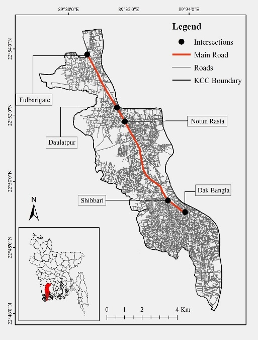
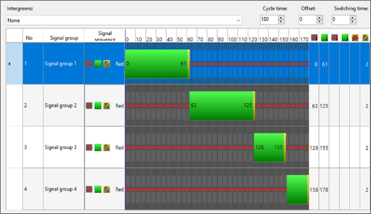
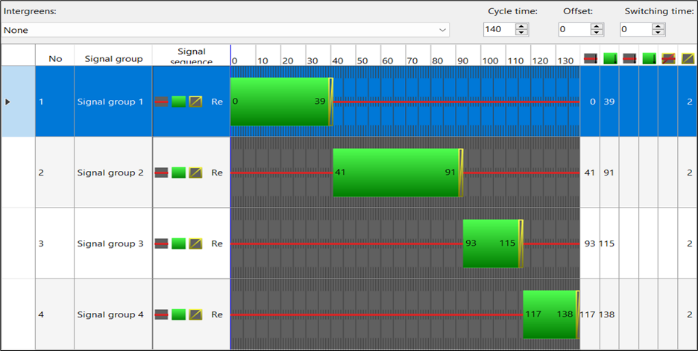

Delay is more than a mobility problem
Stop-and-go traffic increases travel time and creates prolonged periods of idling, acceleration and deceleration around congested intersections.
Transport Planning · Traffic Simulation · VISSIM · Webster Method · SUMO · Vehicle Emissions
A simulation-led study of five major intersections in Khulna City, testing whether targeted traffic signalization can reduce intersection delay while lowering CO₂, CO, HC and particulate emissions.
01 · Research Problem
Khulna’s growing traffic demand places pressure on intersections that were not designed for today’s movement patterns. This research asks whether signal control can improve mobility and reduce pollution at the same time.
Stop-and-go traffic increases travel time and creates prolonged periods of idling, acceleration and deceleration around congested intersections.
The study evaluates CO₂, CO, hydrocarbons and particulate emissions under existing and proposed signalized traffic conditions.
Rather than signalize every junction, five intersections were screened for delay and only the two with substantial congestion were taken forward.
02 · Role & Collaboration
Tanzim Al Noor contributed as a co-author alongside Naima Jabin Tasnim, Mafrid Haydar and Md. Mynul Hossain Chowdhury. The case study presents the team's documented workflow and findings without assigning unsupported individual responsibilities.
03 · Study Area

khulna-study-area.jpg · add Figure 1 from the manuscript04 · Analytical Workflow
The research links field traffic observation to microscopic traffic and emission models rather than treating congestion and pollution as separate planning problems.
Vehicle counts and intersection geometry were collected, including road and lane dimensions and movement direction.
Existing traffic conditions were recreated to estimate delay across candidate intersections.
Cycle length, lost time and green allocation were calculated for the selected intersections.
Signal control programs were applied in VISSIM to estimate post-intervention delay.
SUMO and equation-based estimates compared CO₂, CO, HC and PMx before and after signalization.
05 · Delay Before & After
06 · Webster Signal Timing
Yellow interval · 2 s per phase
Yellow interval · 2 s per phase


07 · Microscopic Emissions
The manuscript evaluates CO₂, CO, hydrocarbons and particulate emissions with both SUMO outputs and equation-based calculations.
The equation-based comparison reports lower emissions after signalization across every 15-minute interval for both selected intersections.
The SUMO analysis is less uniform. Most scenarios show reductions, but the manuscript reports increases during the 45–60 minute interval, with additional increases during 30–45 minutes for several pollutants at Dak Bangla.
08 · Key Findings
Signalization reduces delay on Roads A, C and D. Road B is the notable exception, demonstrating that a single timing plan can redistribute delay between movements.
Delay falls from 92.26 to 51.18 seconds on Road A, 48.63 to 35.59 on Road B, 25.09 to 0.28 on Road C and 8.02 to 0.31 seconds on Road D.
Fulbarigate, Notun Rasta and Shibbari showed comparatively low simulated delay, so the research did not apply signalization or subsequent emission calculations to those locations.
09 · Research Boundaries
The manuscript notes that traffic data collection was constrained by seasonal boundaries and did not capture monsoon conditions.
The detailed methods describe a one-hour evening peak survey used for the modelling exercise, so results should be interpreted within the observed traffic context.
SUMO simulations assume gasoline and diesel passenger vehicles and specified values for speed, acceleration and deceleration. No V2X or V2V vehicles were modelled.
10 · Manuscript Record
This portfolio page presents the latest manuscript supplied by the research team. It does not imply acceptance, presentation or publication.
The manuscript follows the format for the 8th International Conference on Advances in Civil Engineering (ICACE2026), scheduled for 10–12 December 2026 at CUET, Chattogram, Bangladesh.
EVALUATING THE IMPACT OF ENHANCED TRAFFIC SIGNALIZATION ON MICROSCOPIC VEHICLE EMISSION REDUCTION
11 · Research Stack